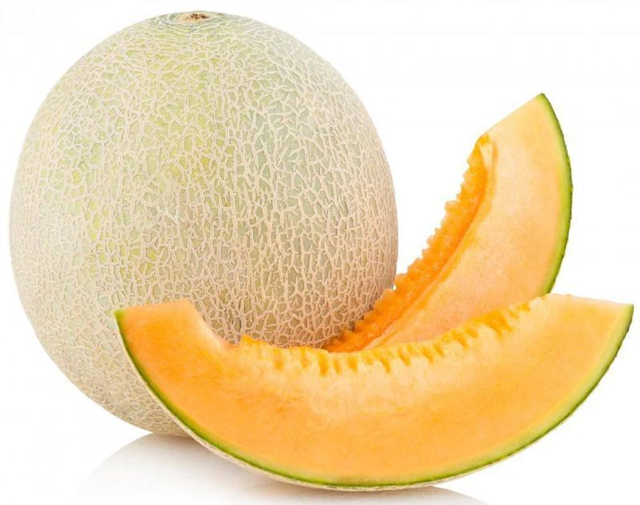

Honeydew melon

| Index |
|---|
| Short description |
| Nutritional value |
| Health benefits |
| Best time to eat |
| Who shoud avoid |
| Fun fact |
Short Description
Honeydew melon is a sweet, juicy fruit with pale green flesh. It is especially popular in summer because of its cooling and hydrating properties.
Nutritional Value
| Nutrient | Amount |
|---|---|
| Calories | 36 kcal |
| Carbohydrates | 9 g |
| Dietary Fiber | 0.8 g |
| Vitamin C | 30% |
| Potassium | 228 mg |
| Water | Very High |
Health Benefits
- Keeps the body hydrated
- Boosts immunity
- Improves digestion
- Supports skin health
- Helps regulate blood pressure
Best Time to Eat
Honeydew melon is best eaten in the morning or early afternoon.It helps cool the body and prevent dehydration
Avoid eating melon:
- At night
- Along with heavy meals
Best practice: Eat alone or as a light snack.
Who Should Avoid
- People with cold, cough, or sinus issues
- Those with weak digestion
- Diabetic patients, if eaten excessively
Fun Fact
- Honeydew is one of the sweetest melons
- It belongs to the muskmelon family
- Honeydew was once called the “king’s melon”